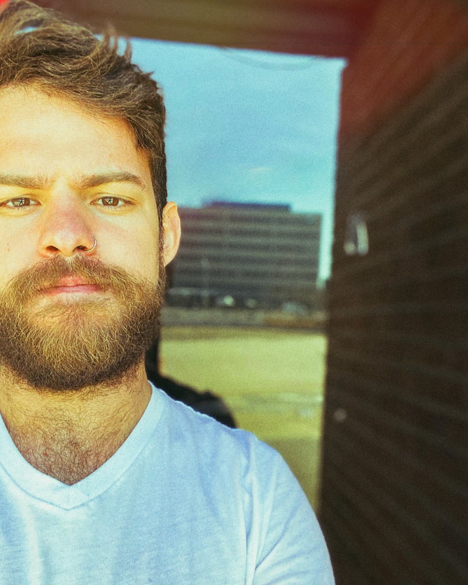

Steven (He/They) is an archivist and practicing psychic medium who works at translating the stories of our pasts, to help us in actualizing more empathetic futures.
Although he can recall psychic experiences had from as early as the age of 7, it wasn't until the age of 25 that Steven began to recognize his seership through the teachings, techniques, and mentorships afforded to him within the Spiritualist church.
Steven lives in Providence, Rhode Island where he received his BA in Anthropology (from Brown University), as well as his first set of tarot cards (that ended up changing everything). He's mentored with progressive psychic medium, Karen Frances McCarthy; occultist and folk magician, Matthew Venus; studied intermediate mediumship with NSAC medium, Joseph Shiel; and has trained extensively over the past six years with the Spiritualist mediums of Camp Etna (an assembly of seers and healers built into the indigenous woodlands of Etna, Maine).
Steven’s worked as the house medium at the Veiled Crow — a brick and mortar Rhode Island formularly — for three years, but is grateful to be currently providing mediumship at the Robin’s Nest (in Bellingham, Mass). In the Fall, he’ll be moving to New York to pursue his masters in archives management, so he can continue working with memories we live into reality every day.
Pronouns: He/They
Contact: velazquez.steven.m@gmail.com